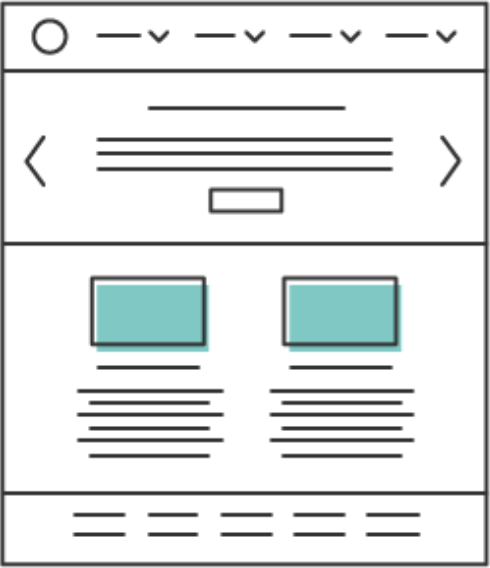

User experience
BAD UX
User experience er følelsen brugerne har, når de bruger produktet. Er UX godt, vil brugeren ikke tænke over at det er der, men blot bruge produktet, som produktet skal bruges. Er det dårligt derimod vil brugerne straks føle det. De vil have svært ved at bruge og forstå produktet. Når man laver UX, sørger man altså for at brugeren er i stand til, på den nemmeste og mest behagelig måde, at bruger det UI der er lavet. Det er altså en design-process man gennemgår her, med henblik på brugeren oplevelse af produktet.
Good UX

User experience er følelsen brugerne har, når de bruger produktet. Er UX godt, vil brugeren ikke tænke over at det er der, men blot bruge produktet, som produktet skal bruges. Er det dårligt derimod vil brugerne straks føle det. De vil have svært ved at bruge og forstå produktet. Når man laver UX, sørger man altså for at brugeren er i stand til, på den nemmeste og mest behagelig måde, at bruger det UI der er lavet. Det er altså en design-process man gennemgår her, med henblik på brugeren oplevelse af produktet.
Værktøjer
Photoshop
Billedredigering
Adobe Illustrator
Sketching

HTML
Hjemmeside content

CS
Hjemmeside design